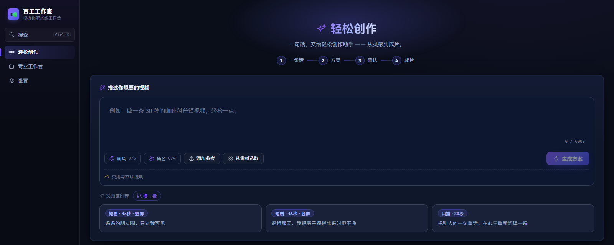
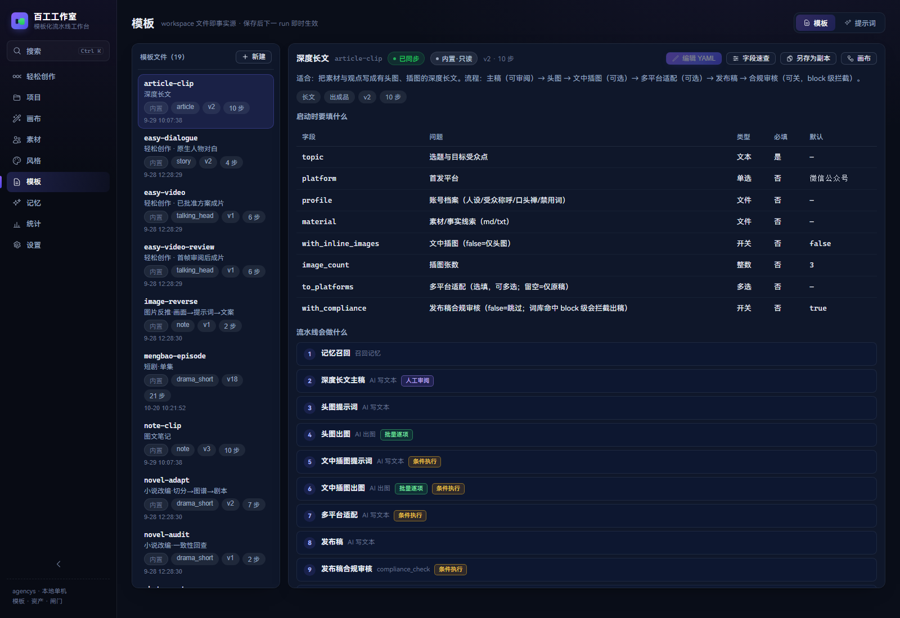

01
智能创作Prompt to cut
一句话描述想法，Agent 自动调度全部专业模板；命中即直调，未命中就合成一条临时流程。30–90 秒、最多 16 镜，支持参考图、参考视频与 BGM 约束。
方案先确认再生成，中途可暂停审阅，成片支持候选选片与自然语言局部返修。批准后的方案可一键升级到专业流水线继续精修。

Local-first · Content pipeline
百工工作室把选题、剧本、分镜、出图、配音与合成收进同一条可审阅的流水线。19 个模板、三种创作方式，项目数据与密钥留在你的电脑里。
01 / Workbench
模板不是黑盒。启动前先看清字段、步骤和闸门；运行时逐段推进，可暂停、可重跑、可批量。下方是真实工作台的模板页截图。

选题、平台、账号档案、素材与开关都写在模板里，启动时按需填写，默认值可见可改。
每一步标注执行方式与条件：AI 写文本、AI 出图、批量逐项、条件执行、人工审阅。
模板是 workspace 里的 YAML 文件。新增体裁不需要改代码，保存后下一次运行直接可用。
02 / Three ways in
先用最轻的方式拿到成片，再把批准过的方案升级为专业流水线。三条路径共用同一套资产、供应商与成本账本。
一句话描述想法，Agent 自动调度全部专业模板；命中即直调，未命中就合成一条临时流程。30–90 秒、最多 16 镜，支持参考图、参考视频与 BGM 约束。
方案先确认再生成，中途可暂停审阅，成片支持候选选片与自然语言局部返修。批准后的方案可一键升级到专业流水线继续精修。

按「我想做什么」选场景卡启动。DAG 并行调度、人工闸门（批准 / 驳回 / 免审放行）、断点续跑、单步重跑与批量运行，多模板还能编排串链。
一套 19 个模板覆盖深度长文、图文笔记、口播成片、小说改编、短剧单集、视频反推、多平台适配等体裁。
素材自由摆放、引用连线、就地生成：文生图、图生图、文生视频、图生视频、TTS、LLM 与视频合成都能落在同一张画布上。
支持局部重绘、消除、扩图与变体抽卡。成片可一键导出 FCPXML、EDL、OTIO 多轨剪辑工程，回到熟悉的剪辑软件继续。
03 / Bench drawers
角色、场景、道具统一入库，版本可追溯；小说、网页、长视频都能成为输入源；品牌与成本规则贯穿每一次运行。
04 / Providers
LLM、图像、视频、语音四通道，每通道可建多个实例。在线服务按 OpenAI 兼容协议接入，本地模型零代码复用同一套接口。
在线拉取模型列表、一键连通测试；每次调用落一条用量与单价快照。云端与本地可以混用，同一条流水线不必绑定单一供应商。
密钥仅存本地 data/secrets.json（0600），不入库、不进 git。云厂商密钥也不会写入模板或运行日志。
05 / Local first
项目、素材、密钥与日志都落在本机目录。没有账号，没有云端工作区，也没有把作品交出去才能使用的步骤。
SQLite 存项目与运行记录，workspace 存模板、提示词与素材。便携版自带 Node 运行时和依赖，对方解压双击即可用，不需要开发环境。
边界说明：调用云端 AI 时，必要的提示词与素材会发送给你配置的供应商；使用 LocalAI / ComfyUI 与本地记忆时，链路可完全离线。本站只做展示与下载，应用本身在本地运行。
06 / Take it home
最新便携版已打包 Node 运行时与全部依赖。解压后双击「启动.bat」，首次启动自动建库并初始化供应商目录。
源码运行需 Node 20+ 与 pnpm；仓库内含上手指南、模板详表与 AI 配置文档。
Windows 便携包无需安装 Node，也无需联网激活。
07 / Before you start
这是一个本地单机应用，不是在线服务。下面几件事，决定了它是否适合你的工作方式。
界面、模板、资产管理与本地记忆可离线使用。调用云端 LLM、图像、视频或语音时需要网络，以及对应供应商的 API Key。接入 LocalAI 或 ComfyUI 后，生成链路也可以完全留在本机。
项目、素材、运行记录与密钥默认存本机，不会同步到任何工作区。只有你主动发起的云端 AI 请求，才会把该次请求所需的提示词与素材发送给你配置的供应商。具体保留策略取决于供应商条款。
不能。本站是产品展示与下载页，不提供在线创作功能。完整应用需要下载到本地运行，因为合成、抽帧、转码与本地模型依赖本机进程与 ffmpeg。
可以。模板就是 workspace/templates 下的 YAML 文件，在模板页可视化编辑字段与步骤，保存后下一次运行即生效。新增体裁不需要改代码，也可以复制内置模板另存为副本再改。
目前提供 Windows x64 便携包。源码依赖 Node 20+，其他平台可自行安装依赖并运行，但尚未提供预构建包，也未做平台验收。便携包的分发脚本以 Windows 为目标。